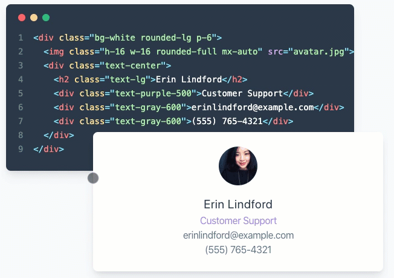

Angular + Material + Tailwind CSS = 💖
Alisa Duncan
Tailwind CSS
Utility first CSS framework
Responsive first
Component friendly
Customizable
🤩
Adding Tailwind CSS to projects
Tailwind has a CLI tool to process CSS
Or add it to your webpack config
But what if you use Angular CLI?...

Use a custom webpack builder
Modify angular.json to use a custom webpack builder
"builder": "@angular-builders/custom-webpack:browser",
"serve": {
"builder": "@angular-builders/custom-webpack:dev-server",
"options": {
"customWebpackConfig": {
"path": "webpack.config.js"
}
},
},
Create the webpack config
Let Angular CLI do the heavy lifting
Just handle the Tailwind CSS part
Simple webpack config
module.exports = {
module : {
rules: [
{
test : /tailwind\.scss$/,
loader : 'postcss-loader',
options: {
plugins: () => [
require('tailwindcss')('./tailwind.config.js'),
require('autoprefixer'),
]
}
}
]
}
};
Enjoy using Tailwind CSS

Add Material components
Use the schematics Angular Material team provides
ng add @angular/materialYou now have the power of both Tailwind CSS and Material.